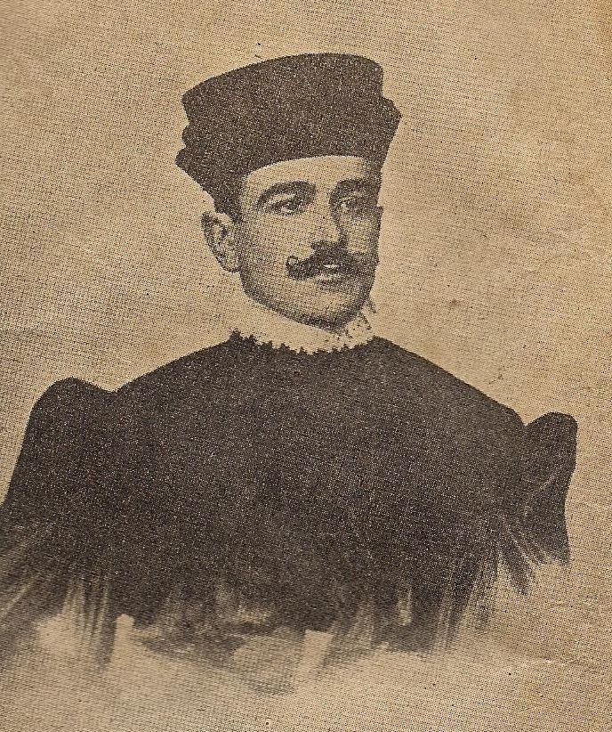

Obra 01 · Sala I
O bacharel de São Borja
- Data
- 1907 (reprodução publicada na revista O Cruzeiro)
- Tipo
- Fotografia de estúdio
- Fonte
- Revista O Cruzeiro, via Wikimedia Commons
Contexto
Na Primeira República (1889–1930), o Rio Grande do Sul era dominado pelo Partido Republicano Rio-Grandense (PRR), herdeiro das ideias positivistas de Júlio de Castilhos, que defendiam um Poder Executivo forte e a ordem acima de tudo. Na faculdade, Vargas participou do Bloco Acadêmico Castilhista. Depois de formado, foi promotor e, em 1909, elegeu-se deputado estadual pelo PRR.
Importância histórica
A imagem mostra a origem social de Vargas: um filho da elite estancieira gaúcha, bacharel em Direito como a maioria dos políticos da época. O futuro “pai dos pobres” não veio das classes populares. A foto também lembra que suas ideias sobre um Estado forte, que conduz a sociedade de cima para baixo, foram aprendidas no castilhismo gaúcho, muito antes do Estado Novo.
Olhar crítico
O retrato solene de formatura foi republicado décadas depois numa revista de grande circulação. Ao divulgar a juventude do presidente, a imprensa ajudava a construir a biografia de um líder que parecia destinado ao poder desde cedo.